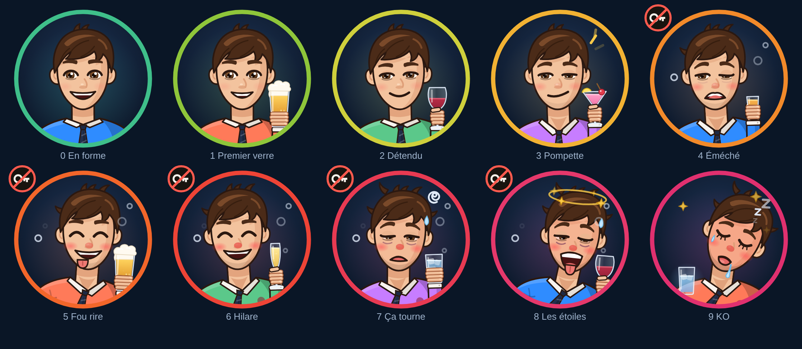
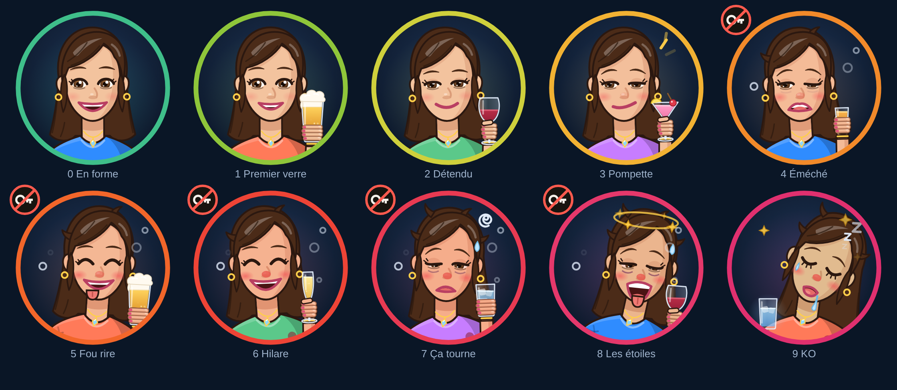

Avatar animé : cahier des charges
Alamb’hic est un jeu de soirée qui estime le taux d'alcool de chaque joueur et l'incite à se modérer avec humour. Son avatar, un personnage en buste dans un cercle, change d'expression selon le taux (10 stades) et tient le dernier verre bu. Ce document décrit le personnage animé à livrer au format Rive (rive.app), qui remplacera le dessin actuel, fait en code.
1. Ce qu'il faut livrer
- Un fichier
avatar.riv(exporté pour le web) et sa source.rev. - Un plan de travail (artboard) nommé
Avatar, carré 240 × 240, fond transparent. Le personnage est cadré en buste, centré, et tient dans un cercle de 220 de diamètre : l'appli ajoute elle-même le fond rond, l'anneau de couleur du stade et le badge « clés confisquées ». - Une machine à états nommée
Etat, avec exactement les entrées décrites au point 4 (noms sensibles à la casse). - Un aperçu vidéo (MP4 ou GIF) de chaque stade et de chaque geste, pour la validation.
- Avec le même squelette : une version femme (plan de travail
AvatarF), déjà en place dans l'avatar actuel (cheveux longs, pendentif, bracelet), voir le point 9. Prévoir aussi la teinte de peau et la couleur de cheveux pilotables (6 teintes, 6 couleurs), et la peau qui rosit puis pâlit avec le stade.
2. Le personnage
- Homme de 25 à 35 ans, sympathique, visage expressif ; style cartoon plat moderne, contours fins, ombres franches (aplats, pas de dégradés lourds), comme le dessin actuel ci-dessous en plus abouti.
- Chemise de couleur (couleur propre à chaque joueur), col blanc, cravate bleu foncé ; la tenue se défait au fil des stades.
- Lisible en petit : il s'affiche entre 52 et 120 pixels dans l'appli (jusqu'à 400 sur l'écran TV). Expressions marquées, peu de petits détails.
- Humour bienveillant : il devient drôle, jamais pathétique ni sale.

Référence : les 10 stades de l'avatar actuel (pantin dessiné et animé en code). Garder les idées (expressions, cheveux, cravate, effets, gorgée jusqu'à la bouche, liquide qui reste à l'horizontale), en mieux.

Référence : la version femme actuelle (cheveux longs, pendentif à la place de la cravate, bracelet, vernis). Teintes de peau et couleurs de cheveux au choix du joueur.
3. Les 10 stades
Seuil = taux estimé en g/L à partir duquel le stade s'affiche. L'appli calcule le stade et le transmet à l'animation (entrée stage).
| Stade | Seuil | Visage | Cheveux | Tenue | Effets autour | Mouvement de repos |
|---|---|---|---|---|---|---|
| 0 · En forme | 0 | Yeux grands ouverts, grand sourire | Coiffé | Chemise impeccable, cravate nouée | — | Respire, cligne des yeux |
| 1 · Premier verre | 0,05 | Sourire franc, yeux pétillants | Coiffé | Idem | — | Idem |
| 2 · Détendu | 0,20 | Paupières un peu lourdes, sourire doux | Coiffé | Idem | Léger rose aux joues | Léger balancement |
| 3 · Pompette | 0,35 | Clin d'œil, sourire en coin | Une mèche s'échappe | Col ouvert, cravate desserrée | Petites étincelles | Balancement léger |
| 4 · Éméché | 0,50 | Un œil mi-clos, cernes légers, bouche entrouverte | Ébouriffé | Cravate de travers | Bulles qui flottent | Hoquet de temps en temps |
| 5 · Fou rire | 0,65 | Yeux plissés de rire, langue tirée | Ébouriffé | Cravate qui pend, chemise froissée | Bulles | Rire (épaules qui sautent), hoquet |
| 6 · Hilare | 0,80 | Rire aux éclats, nez rouge | En bataille | Tache de vin sur la chemise | Bulles | Rire, hoquet, balancement marqué |
| 7 · Ça tourne | 1,00 | Yeux qui flottent (pupilles qui tournent), bouche en vague, goutte de sueur | En bataille | Idem | Spirale au-dessus de la tête | Tangue franchement, hoquet |
| 8 · Les étoiles | 1,20 | Yeux dans le vague, bouche grande ouverte, langue | Très en bataille | Cravate presque défaite | Couronne d'étoiles qui tourne | Tangue fort, hoquet |
| 9 · KO | 1,50 | Endormi, filet de bave, larme | Très en bataille | Débraillé | Étoiles et « z z » | Tête penchée, respiration lente ; tient un verre d'eau posé à côté |
4. Machine à états Etat : entrées
| Nom | Type | Rôle |
|---|---|---|
stage | Number (0 à 9) | Stade courant, calculé par l'appli à partir du taux (seuils fixes ci-dessus, identiques pour tous les joueurs). Le passage d'un stade à l'autre doit être fluide (transition de 0,3 à 0,6 s), dans les deux sens. |
glass | Number (0 à 6) | Verre en main : 0 aucun, 1 bière, 2 vin, 3 champagne, 4 cocktail, 5 shot, 6 eau. Le verre change sans à-coup (il disparaît puis apparaît dans la main). |
sip | Trigger | Gorgée : déclenché à chaque verre noté. Le bras se plie, le verre arrive à la bouche et s'incline, la tête part légèrement en arrière, puis tout revient. Durée 1,4 à 1,8 s. Sans effet si glass = 0 ou au stade 9. |
stageUp | Trigger | Sursaut au changement de stade (petit saut et rebond, 0,6 à 0,9 s). L'appli affiche elle-même la bulle de texte avec le nom du stade. |
calm | Boolean | Animations réduites (réglage « réduire les animations » du téléphone) : plus de balancement ni de hoquet, seulement le clignement et la respiration très discrète. |
shirt | Color (propriété de données) | Couleur de la chemise, différente pour chaque joueur (couleur de sa courbe). Si la couleur pilotable pose problème : prévoir 8 variantes de chemise, voir la palette. |